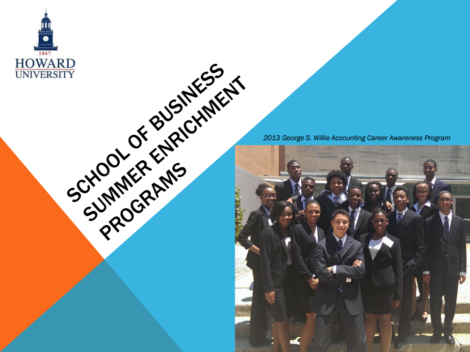

Special Programs
High School Summer Enrichment Programs
George S. Willie Accounting Career Awareness Program (ACAP)
July 10-15, Residential
The Accounting Career Awareness Program was established in 1980 by the National Association of Black Accountants (NABA) to increase the understanding of accounting and business career opportunities among high school students from underrepresented ethnic groups.
This program’s agenda includes site visits and sessions on Accounting Careers, Introductory Accounting Skills, Financial Literacy, ACT/SAT Preparation, Leadership Development, and Educational/Professional Development.
Computer Information Systems career Awareness Program (CISCAP)
July 10-15, Residential
CISCAP is an intensive one-week residential program for rising high school seniors who have an interest in computers, business, or STEM (Science, Technology, Engineering and Math) discipline. This enriching week provides exposure to the possible range of careers in Information Systems, as well as an opportunity to attend college preparatory classes. The goal of CISCAP is to encourage and assist high school students from under-represented minority ethnic groups to attend college and consider selecting Computer Information Systems as a possible major.
Summer Actuarial Program (SAP)
July 10-22, Residential
The Summer Actuarial Program is an educational enrichment experience in mathematics, statistics, computers, business, and actuarial careers for exceptional mathematics high school juniors. The program is funded by the Joint CAS/SOA Committee on Minority Recruiting, insurance companies, actuarial consulting firms, and Howard’s Center for Insurance Education. It is devoted to helping strong mathematics students improve their skills and providing information about business and actuarial careers.

Danielle Williams
Recruitment & Admissions Coordinator/ Academic Advisor
School Of Business
P: (202) 806-1504
email: husbsummerprograms@gmail.com